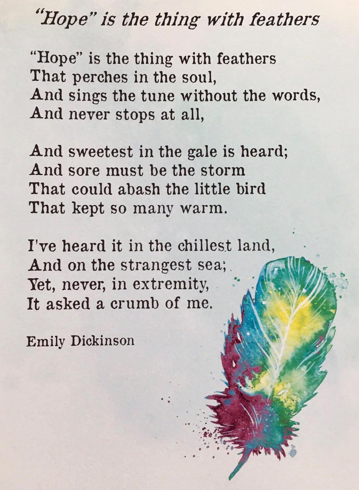

Happy Tuesday! Thank you for supporting the Daily Bulletin project.
- Suggest improvements to the Daily Bulletin project.
- Unsubscribe if you no longer wish to receive emails from the Daily Bulletin project.
MOVEMBER Special - Wellbeing Inspirations
Want to contribute to a future Daily Bulletin? Share your inspirations to give everyone some morning wellbeing energy!
Poeme of the Day

Delicious Dinings
| Day | Meal | Options |
|---|---|---|
| Tue | Breakfast | Continental Counter |
| Lunch | Cheesy Chipotle, Mushroom Rice Bake 🌱 | |
| Smokey Bean & Sweet Potato Quesadillas 🌱 | ||
| Dinner | Pork Chop | |
| Halal Chicken Leg | ||
| Wed | Breakfast | Hot Breakfast |
| Lunch | Beef Bourguignon | |
| Creamy Mushroom Ragout 🌱 | ||
| Dinner | Falafels 🌱 | |
| Cauliflower Bake 🌱 |
The catering team would like to remind everyone to wash their hands before coming to the dining hall, and to refrain from eating in the servery area. Thank you!
Retrieved from Shared Weekly Menu. For reference only; accuracy not guaranteed.
Important Events
| Day | Time | Event | Location |
|---|
Retrieved from What's On This Week.
Today in History
- 1898 – White supremacists seized power and massacred black Americans during the Wilmington massacre , the only instance of a municipal government being overthrown in United States history.
- 1969 – The first episode of the children's television series Sesame Street was broadcast in the United States.
- 1975 – Angolan Civil War: The MPLA decisively defeated the FNLA at the Battle of Quifangondo, while Portugal simultaneously withdrew all its colonial and military personnel from Luanda.
- 2006 – Sri Lankan Tamil politician and human rights lawyer Nadarajah Raviraj was assassinated in Colombo.
Retrieved from Wikipedia.